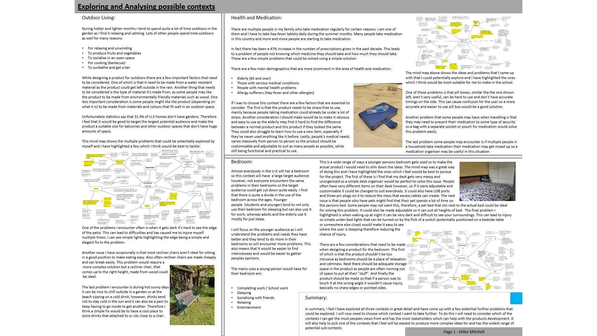
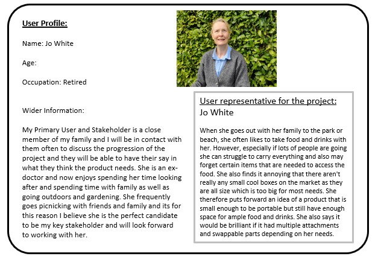
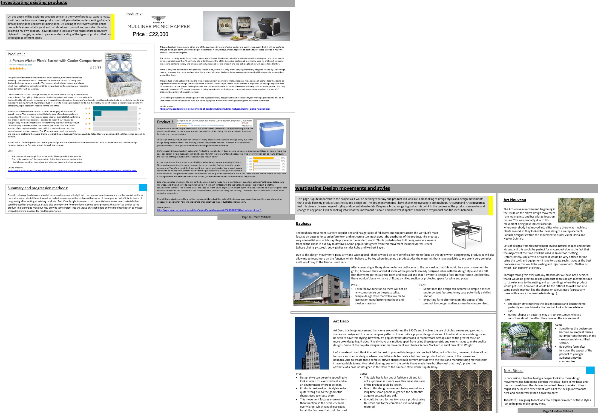
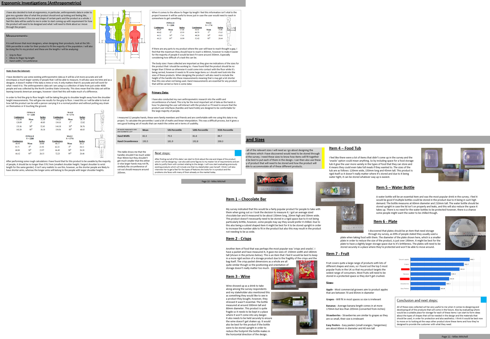
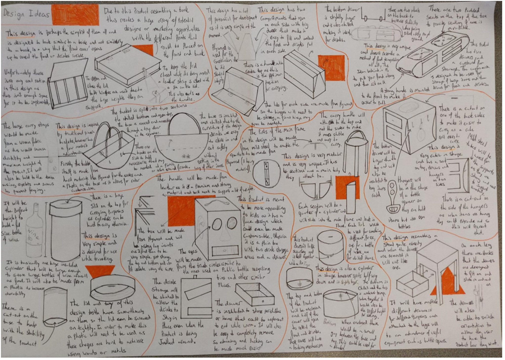
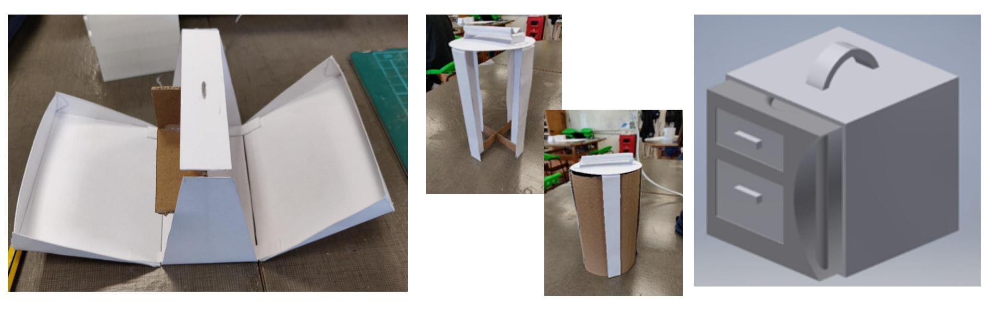
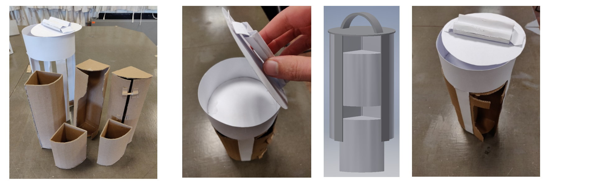
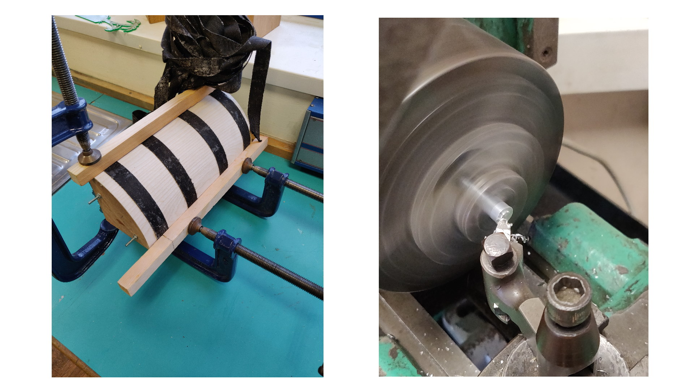
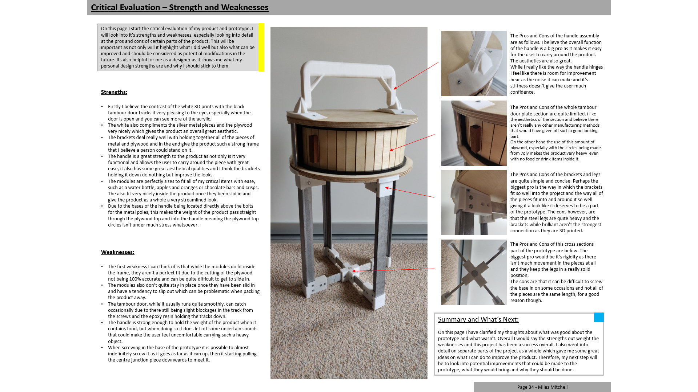

Quik-Nic - Alevel Design Project

The Quik-Nic is my A-Level Product Design project and largely follows the same idea as that of my GCSE project however is completed in more depth. I therefore learnt more from it and have more material to present. The project required me to identify my own problem that I often see in everyday life and create a product to solve it. Firstly I found a primary user and asked them about problems they often come across.
Then after identifying these problems I went to my primary user to ask their thoughts on the potential routes I could take and they provided some valuable insights. The decided upon problem was Outdoor Living with the problem statement being solving the problem of secure and separated food and drink transportation.
In order to give me some ideas about current products that could be performing better I looked into existing products that would fulfil the problem statement and checked their reviews to see what aspects of the products users were complaining about / thought could be improved. I also researched design styles as well as current and previous designers to get some inspiration in the design of my product.
Now that the problem being faced had been decided upon I needed to collect relevant data that would help me with designing not only the initial prototypes, but sizing the final prototype to a 1:1 scale. This included all of the items the product might come into contact with as well as anthropometric data of hands as these are the points of interaction between the user and the product.
With all inspiration and data now collected it was time to ideate. Initially I wanted to come up with a great range of concepts so that there were many options but also so that I was getting lots of ideas for functions that could be implemented into a later prototype if needed. The designs that were ideated are shown below.
Showing these designs to my primary user it was clear that there were 3 concepts to take forward. The next step was to create small scale prototypes of these designs to give some more indication as to how well each of them would perform for the given function.
After choosing to go with the cylindrical design, due to its aesthetic appeal but also its customisable function, iteration was the next step. Below is a journey the iterations took, starting with the original design.
At the end of the iterations a final design was decided upon. I discussed with the user the changes that had been made and they were happy to proceed. A final high-fidelity prototype was made to depict how the design might look if it were to be made.

With the final design fixed, production of a working prototype could begin. Below are some of the images documenting the journey of creating a physical product.

As with all completed projects it became time to reflect on how the project went and what could have gone better. The outcome of this was a development of my understanding with regards to design projects as well as some further iterations that could be made were the product going to go into production.
